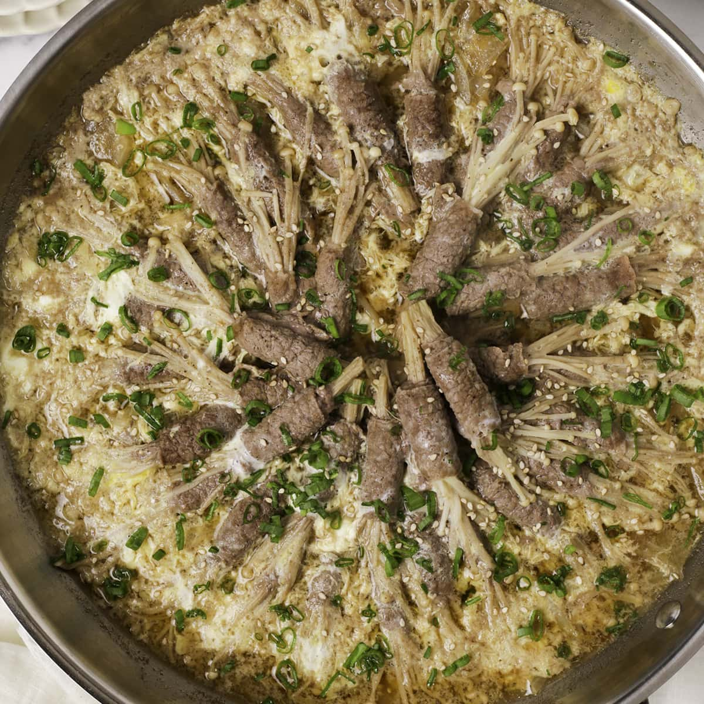

Beef Enoki Recipe
Home

Beef enoki (or enoki beef rolls) is a popular Japanese dish featuring delicate enoki mushrooms wrapped in paper-thin slices of beef, then pan-seared or simmered in a sweet soy-based sauce. This quick-cooking dish offers a contrast of textures—tender, savory beef with chewy, juicy mushrooms—making it a popular, flavorful appetizer or main meal.
The Ingredients:
- 250g Thin Pork Slices
- Enoki Mushrooms
- 1-2 eggs
- Soy Sauce
- Honey
- Cheese
How to Cook Beef Enoki:
- Wrap thin slices of pork slices in the seperated enoki stems
- Prepare a sauce mixture of soy sauce, honey, water and pepper
- Cook the meat-wrapped enoki until it is brown
- Add the sauce mixture
- Add the beaten eggs and cook
- Once the egg is almost cooked, add the shredded cheese and cover to let it melt
- Enjoy!